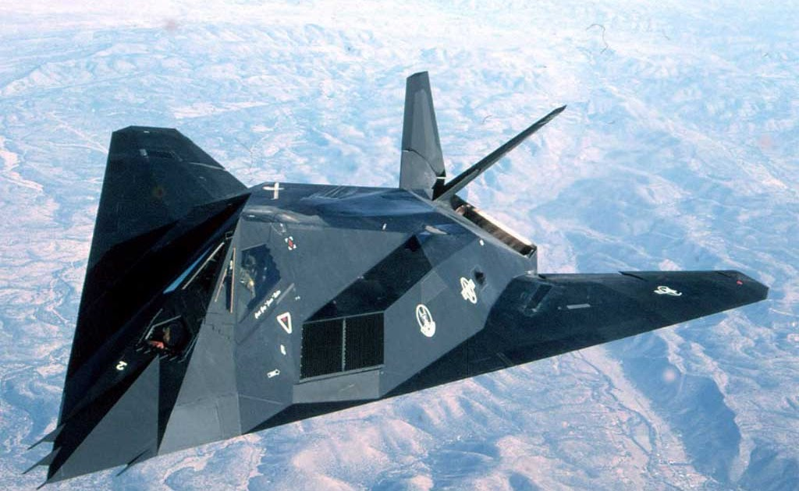
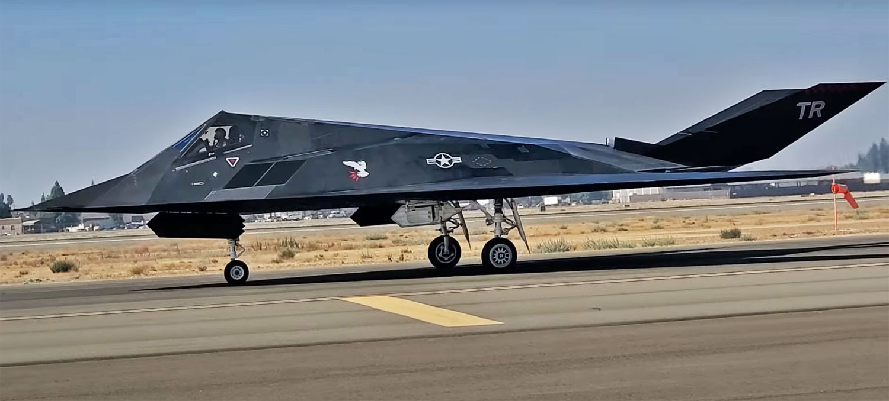
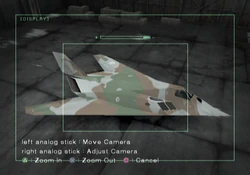

| Descrição | |
|---|---|
| Função: | Bombardeiro estratégico e de ataque furtivo |
| Local de Origem: | Estados Unidos |
| Fabricante: | Lockheed Corporation |
| Primeiro Voo: | 18 de junho de 1981 |
| Introduzido em: | Outubro de 1983 |
| Status: | Aposentado em 2008 e retrnou em 2021 |
| Utilziadores: | Estados Unidos |
| Produzido: | Entre 1960 e 1983 |
| Caractersiticas Gerais | |
| Tripulação: | 1 pessoa |
| Comprimento: | 20,09m |
| Altura: | 3,78m |
| Envergadura das Asas: | 13,20m |
| Area das Asas: | 73m² |
| Peso Vazio: | 13.380kg |
| Peso Bruto: | Não disponível ao publico |
| Peso Máximo de Decolagem: | 23.800kg |
| Capacidade de Combustivel: | Não disponível ao publico |
| Performace | |
| Motores: | 2 x Motores turbofan General Electric F404-F1D2 |
| Empuxo: |
|
| Velocidade Máxima: | 0,92 Mach ou 993km/h |
| Alcance: | 1.720km |
| Alcance de Combate: | 13.716m |
| Armamento | |
| Hardpoint | 2 x Baias Internas de Armas, sendo 1 Hardpoint em cada |
| Bombas |
|
O F-117 Nighthawk é um avião “invisível” foi avistado porque não é invisível.
Ele é pintado em cores escuras para ser difícil de enxergar à noite mas o que o torna de diferente é que é muito difícil de detectar por radar,
e toda sua geometria é pensada nisso. Essa é a tecnologia stealth, que já foi exclusividade dos EUA. E o F-117 não tem um histórico não exatamente heroico.
Um deles chegou a ser derrubado por forças sérvias usando equipamento soviético dos anos 1960 durante o bombardeio da OTAN na Guerra do Kossovo.

O projeto, anunciado oficialmente em 1989, no mesmo ano em que o B-2 se tornou público, já nasceu obsoleto. A forma tão cheia de facetas é fruto de uma limitação computacional.
Os computadores de 1975, quando o projeto começou, não eram capazes de simulações que permitissem projetar um avião stealth curvo. O F-117 decolou pela primeira vez em 1981.
O formato, que os pilotos de teste nos anos 1970 achavam que seria capaz de voar, quer dizer que nunca funcionou muito a contento. Por conta da sua complexidade de suas superfícies,
ele só pode voar com a ajuda de computadores mas é equipado com computadores dos anos 1970. Então nunca fez seu trabalho muito bem. O F-117, com o nome indica, com o F de “fighter”,
era para ser um caça. Um caça-bombardeiro pesado furtivo. Por sua falta de manobrabilidade, e por não ter capacidade supersônica, nunca serviu como caça, usado apenas para ataque a solo.

O F-117 foi recentemente reativado para servir como avião de treinamento. Um fato interesante, é que no passado quanto as pessoas avistavam o F-117 elas pensavam
que eram alienigenas devido ao seu formado peculiar. O F-117 já apareceu em jogos e filmes, como na franquia "Ace Combat".

F-117 em na franquia "Ace Combat"